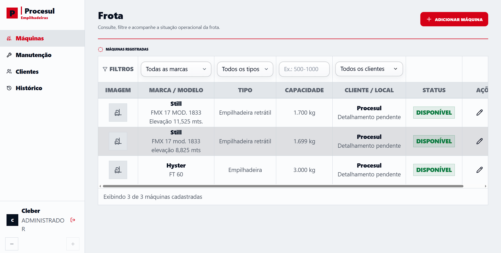
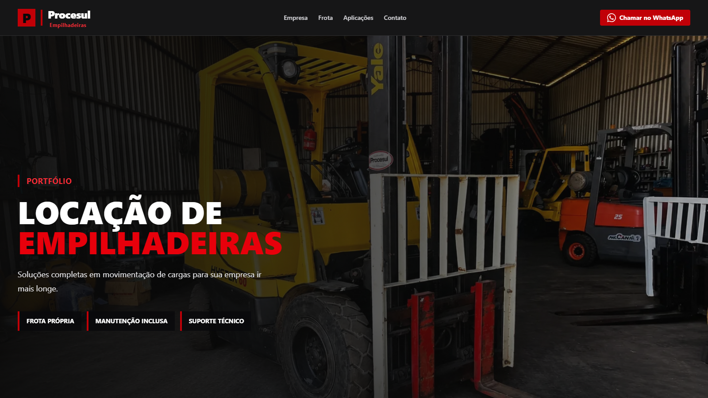
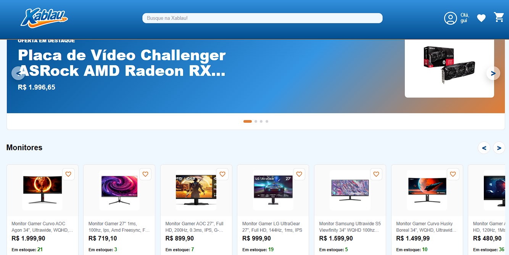

Olá eu sou
Guilherme Fernandes
Desenvolvedor Full Stack
Estudante de Sistemas de Informação com experiência em React, TypeScript, C# e ASP.NET Core.

Sobre mim
Acredito que o estudo constante é a chave para a evolução. Quando não estou aprendendo algo novo, muito provavelmente estou em meio ao caos divertido de ter cinco gatos e um cachorro. Gosto de me desafiar, seja nos jogos (apaixonado por souls like e FPS) ou tentando novas manobras no skate. Nas horas vagas nada melhor do que correr, assistir a animes, filmes e séries ou passar um bom tempo de com a família e amigos.
Resumo Profissional
Sou estudante de Sistemas da Informação pela UNISINOS e desenvolvedor em formação com foco em Desenvolvimento Full Stack. Tenho experiência prática com React, TypeScript, JavaScript, C#, ASP.NET Core Web API, Entity Framework Core e PostgreSQL.
Recentemente, participei do desenvolvimento de um sistema de gestão de empilhadeiras para uso real, atuando principalmente no frontend, integração com API e organização dos fluxos da aplicação.
Também tenho experiência com suporte de TI e automação de processos usando JavaScript/Node.js, incluindo uma automação que reduziu uma tarefa administrativa de 5 horas mensais para cerca de 1 minuto. Busco uma oportunidade como Estagiário ou Desenvolvedor Júnior em Front-end, Full Stack ou Desenvolvimento Web.
Projetos

Sistema de Gestão de Empilhadeiras | Freelance
Sistema web para gestão de máquinas, clientes e chamados de manutenção, com histórico de movimentações, status e prioridades.
- Atuação
- Frontend, integração com API e apoio no backend
- Resultado
- Sistema comercial entregue para uso real

Landing Page Institucional | Freelance
Landing page responsiva para apresentação de serviços, identidade visual e contato comercial da empresa.
- Atuação
- Planejamento, design e desenvolvimento frontend
- Resultado
- Site institucional publicado para cliente real

E-commerce Full Stack | Teste técnico de 30 dias
Aplicação inspirada na KaBuM com autenticação, catálogo, favoritos, carrinho, checkout, pedidos e painel administrativo.
- Atuação
- Desenvolvimento Full Stack
- Resultado
- Entrega completa em teste técnico de 30 dias

Gerador de Planilhas (projeto real)
Automação para geração de planilhas de gestão a partir de dados de vendas e estoque das filiais da Ótica Popular.
- Atuação
- Levantamento, desenvolvimento e implantação
- Resultado
- Redução de 5 horas mensais para cerca de 1 minuto
Currículo
Formação Acadêmica
Sistemas da Informação
Conclusão prevista para janeiro de 2028. Formação com foco em Engenharia de Software, Banco de Dados, Testes e fundamentos de redes.
Experiência Profissional
Assistente Administrativo e Suporte de TI
Desenvolvi automação em JavaScript/Node.js para planilhas de gestão, reduzindo uma tarefa de 5 horas mensais para cerca de 1 minuto. Também prestei suporte técnico às filiais.
Idiomas
Inglês C1
Nível avançado para leitura de documentação técnica e comunicação em contextos acadêmicos e profissionais.